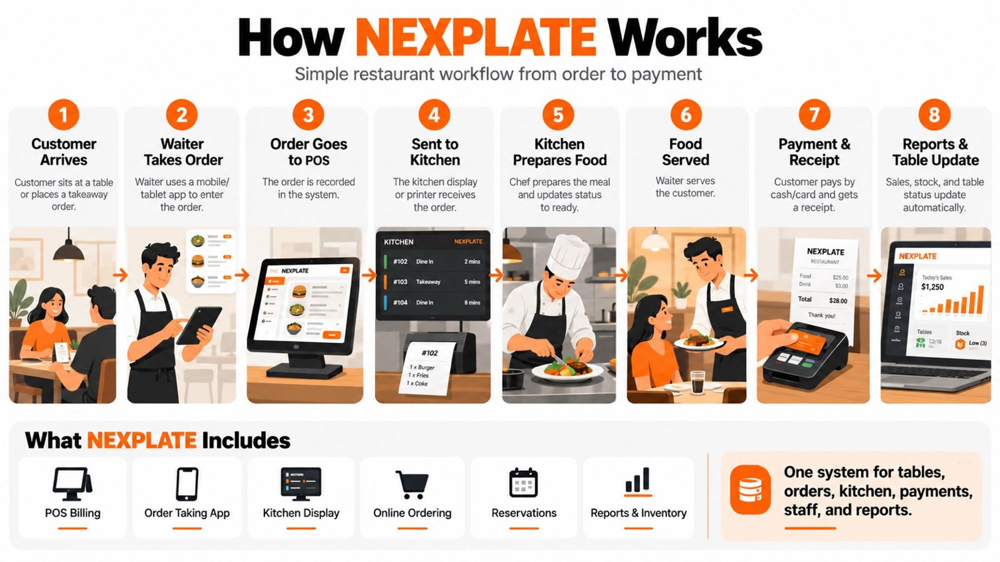

Customer arrives
Guests sit at a table or place a takeaway order.
HOW NEXPLATE WORKS
Follow the journey from the first order to the final bill.
Guests sit at a table or place a takeaway order.
A mobile or tablet app captures the order.
The order is recorded for the team.
A kitchen display or printer receives the ticket.
The kitchen prepares the meal and updates progress.
The server delivers the meal to the guest.
The guest pays and receives a receipt.
Sales, stock, and table information complete the service cycle.

ONE CONNECTED SYSTEM
POS billing · Order taking · Kitchen display
Online ordering · Reservations · Reports & inventory